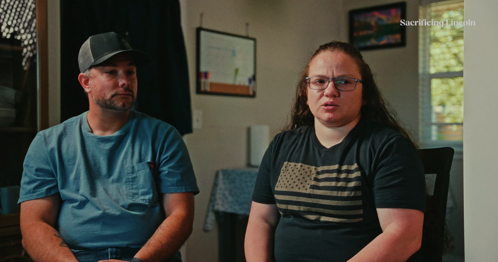
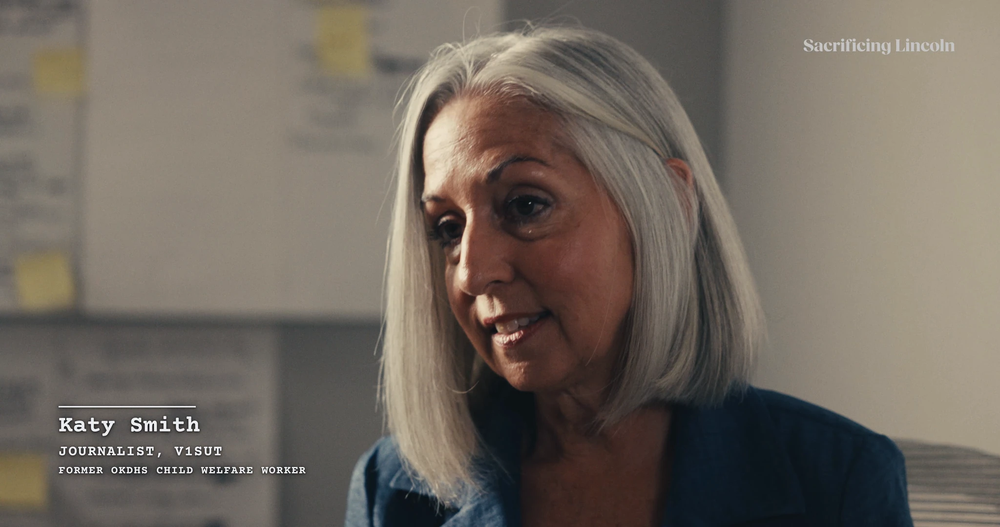
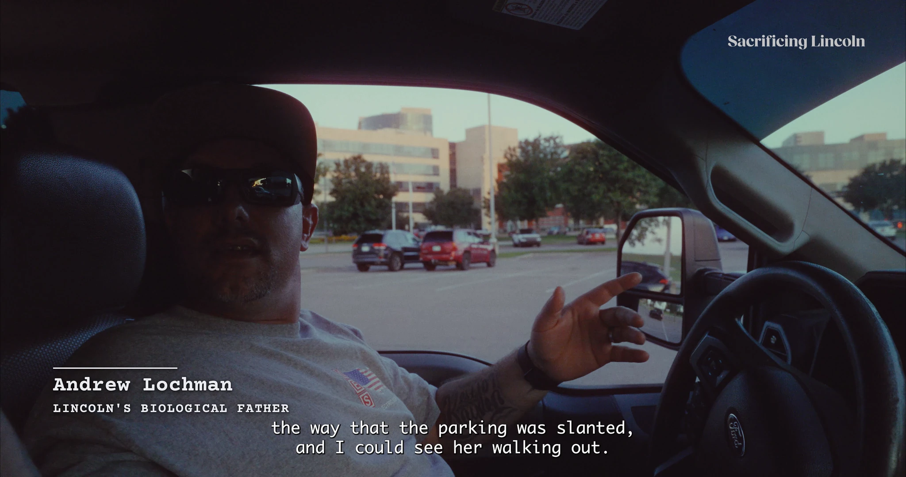
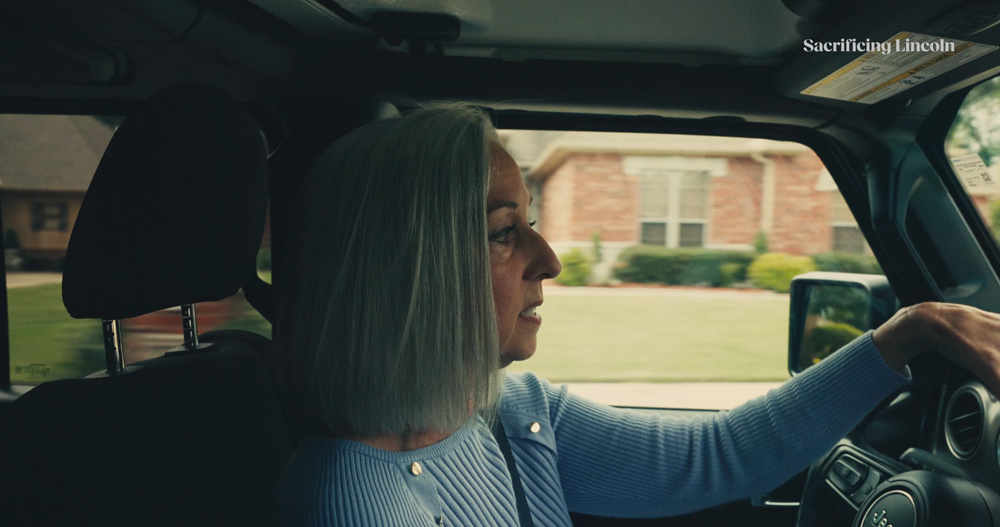
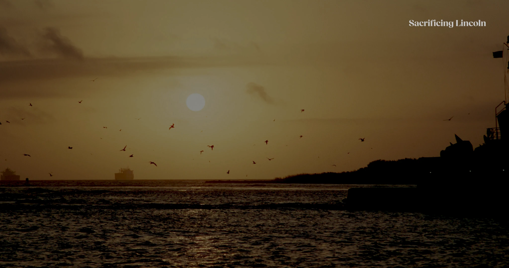

In production
Sacrificing Lincoln
One family's separation. A journalist's investigation. Questions of accountability in child welfare.

About the film
Andrew Lochman's return to the hospital where his son was taken into state custody opens a story about his family's separation and public accountability. Sacrificing Lincoln follows Andrew and Gardenia Lochman's own account of their efforts to bring Lincoln home, alongside journalist Katy Smith's investigation into the decisions surrounding his case.
The documentary combines the parents' testimony with witness accounts, recorded conversations and documents. From Lincoln's removal and placement to questions of oversight in Oklahoma and Kansas, it examines the gap between a system's protective purpose and the experiences of the families who challenge its decisions.
From the film




Production
Directed by Kevin Batts and Katy Smith. Story producer Janelle Batts. Cinematography and editing by Kevin Batts. Katy Smith is also credited as creative editor and narrator.